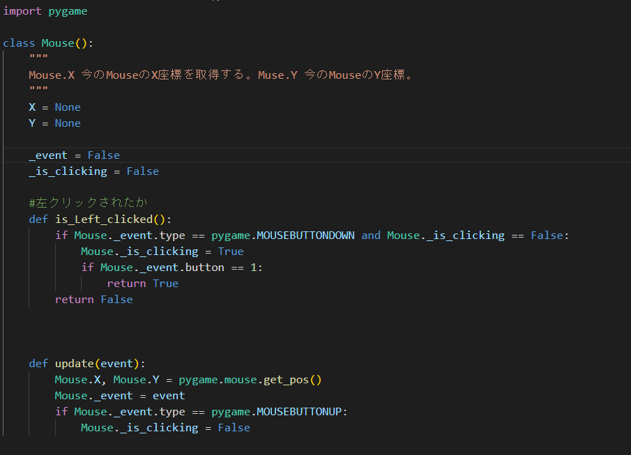
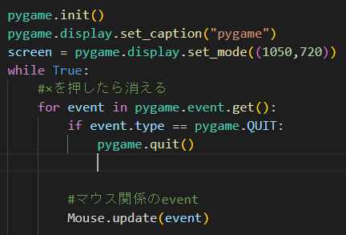

ここのテキストのみをDBに保存
Pygameのマウスを扱いやすく工夫してみました。
MouseClassを作るというものです。以後Mouseと呼びます。
このMouseには常に現在のマウスのイベントを読み込み、クリックされたか、もしくはボタンが解放されたか、などを管理するものです。

このMouseをimportして使うと下記のように使える。
if Mouse.is_Left_clicked():
print("左クリックされました")
加えて、 Mouse.X, Mouse.Y のようにしてカーソルのXY座標をどのファイルからでも参照できるようになります。
また、このMouseを使うときは、mainのwhile文の中でupdateを下記のように行う必要がある。

今回はpygameでのマウス操作を簡易的に行う手法をお話ししました。
他にも興味のある記事がありましたら、ぜひご覧ください。